Airco Fasteners Pty Ltd
IT Support Assistant (Full-time Contract Cover) • 01/2026 - 04/2026
Worked as an IT Support Assistant supporting office and warehouse users across day-to-day IT operations. I handled
device deployment, Microsoft 365 support, troubleshooting, asset management, and user onboarding in a fast-paced
business environment.
Monash University
IT Support Officer (Casual and Internship) • 03/2025 - 12/2025
Provided frontline IT support across university and eAssessment environments, assisting students and staff with
technical issues, device setup, and service desk support. This role strengthened my troubleshooting, communication, and
customer support skills in high-pressure situations.
Freelance
UI/UX Designer • 04/2021 - 06/2022
Designed wireframes, prototypes, and responsive user interfaces for client projects using Figma, Adobe XD, and
Photoshop. I focused on improving usability through user research, feedback, and practical design solutions.

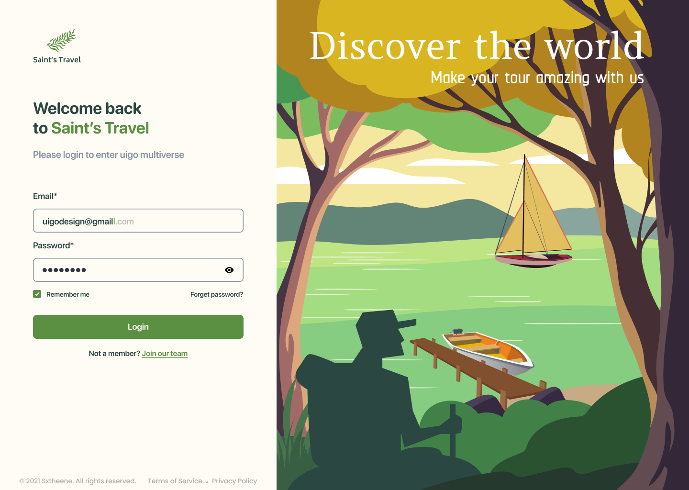


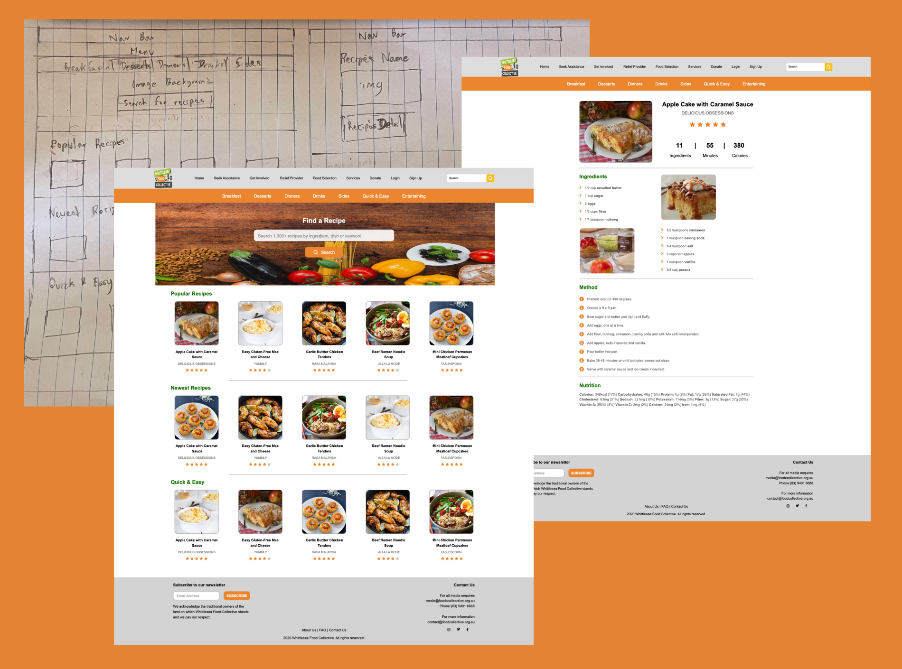
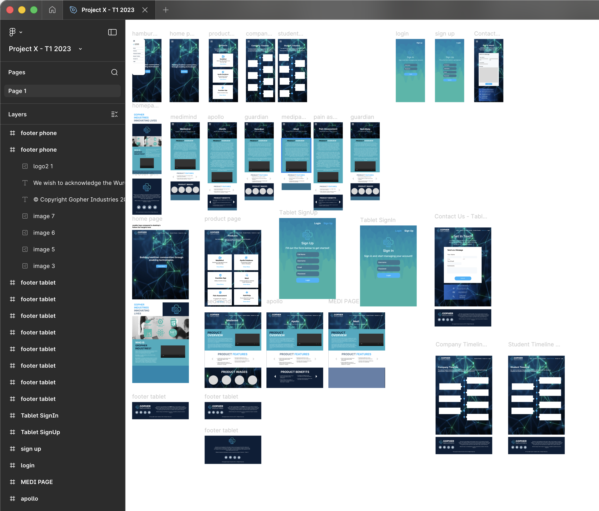
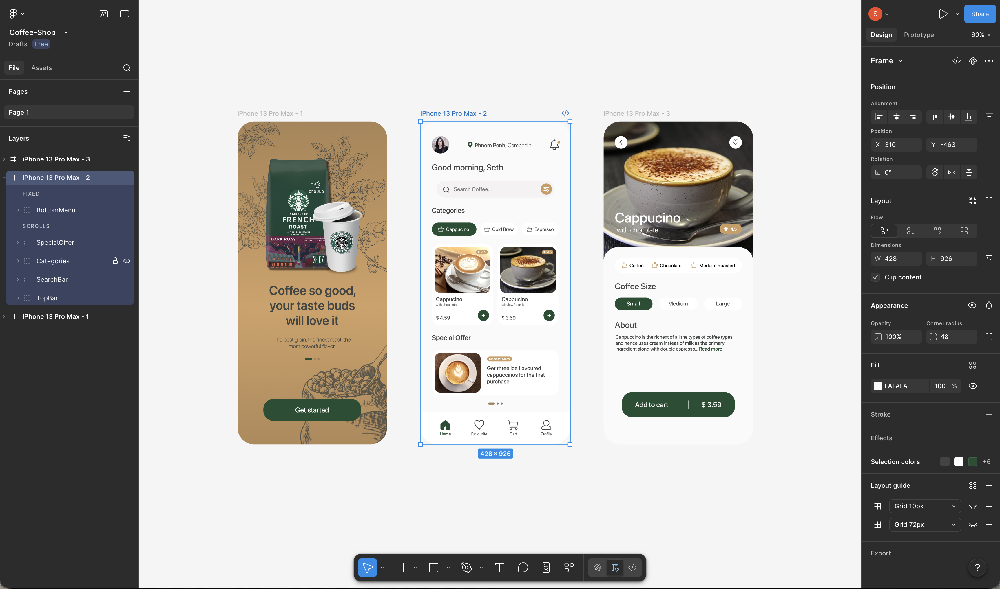

VTI Corporation
Android Frontend Developer (Virtual Internship) • 11/2020 - 02/2021
Contributed to the development of an online banking app during my virtual internship as an Android Developer. I worked with
Java, XML, and Firebase while gaining experience in UI design, debugging, testing, and team collaboration.
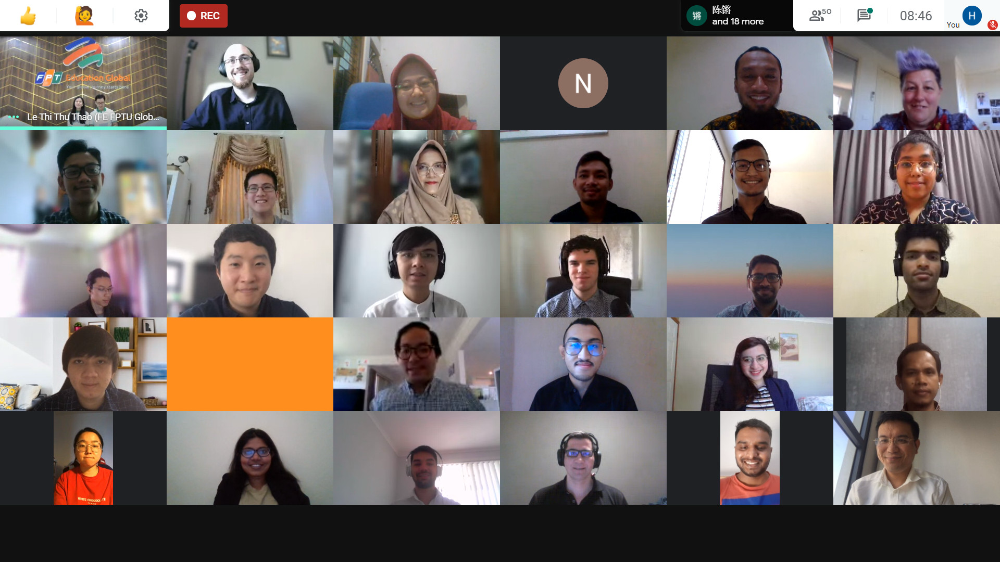
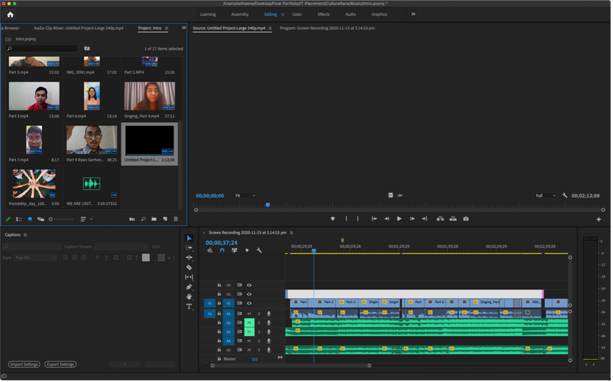
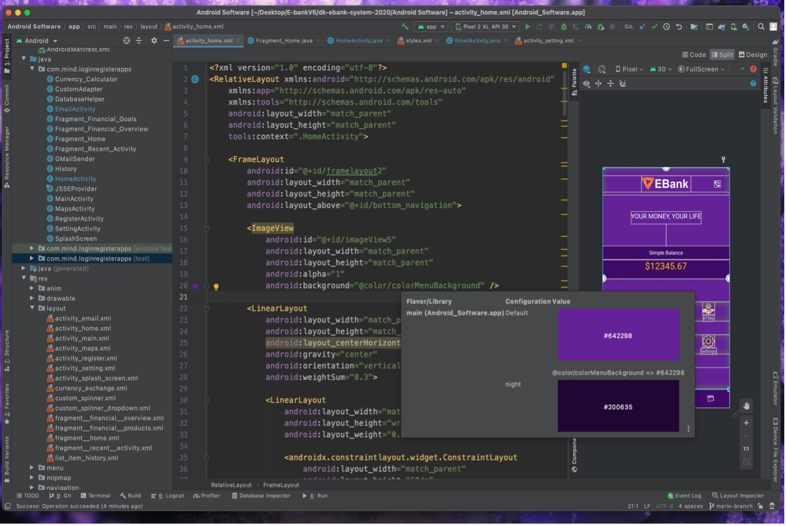
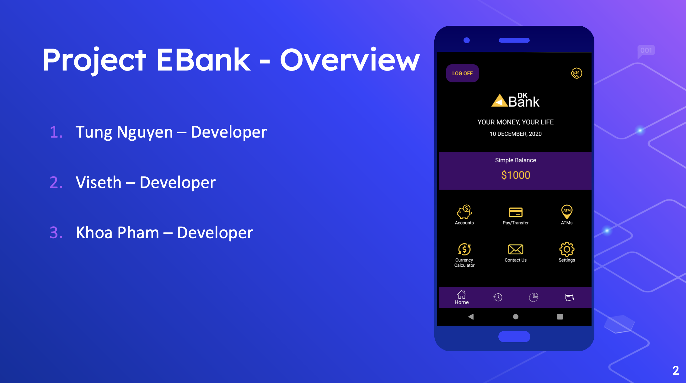
Chapei Dong Veng Cultural Festival, Phnom Penh
Volunteer Graphic Designer & Photographer • 11/2019
Supported the Chapei Dong Veng Cultural Festival by creating visual materials for both print and digital platforms,
including posters, backdrops, X-stands, and Facebook frames. I also photographed event activities and edited images
using Photoshop and Lightroom, while contributing ideas in team meetings.
Professional Year in ICT
Monash College, Dockland • 06/2024 - 06/2025
Completed the Professional Year in ICT at Monash Professional Pathways, where I developed workplace communication,
business etiquette, and professional skills for the Australian IT industry. The program helped me build confidence and
prepare for real-world corporate environments.
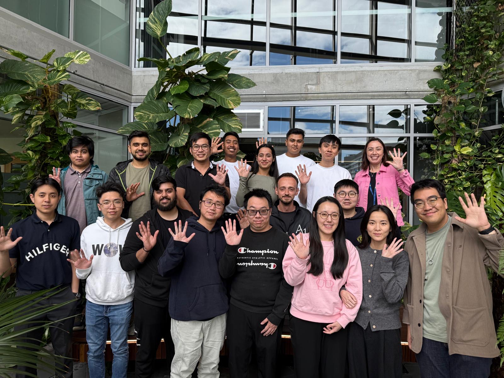
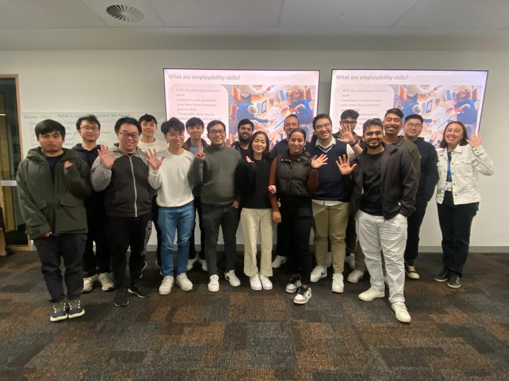

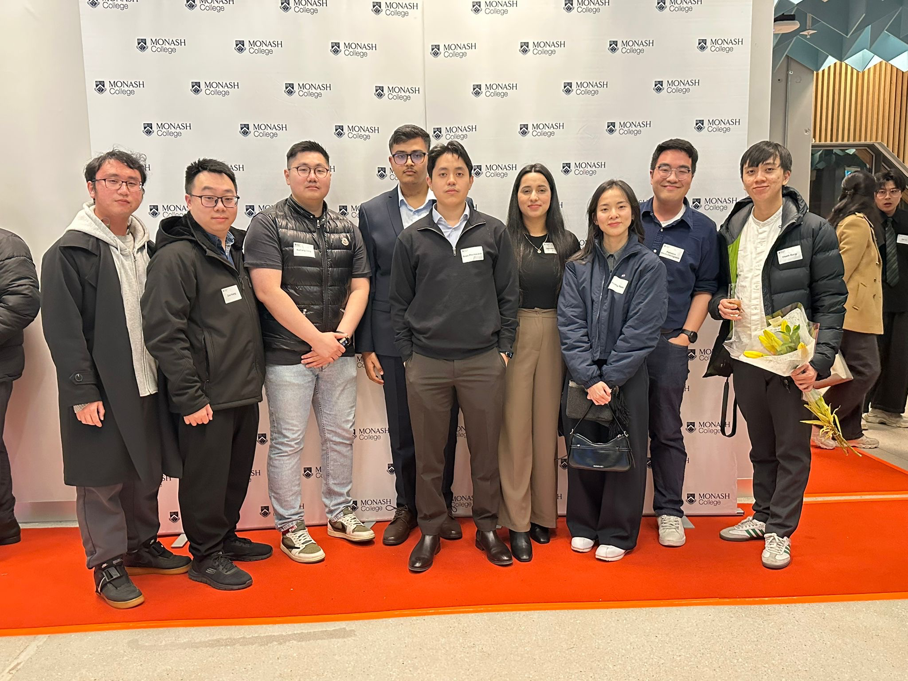
Degree Graduation
Deakin University, Burwood • 03/2019 - 06/2023
Graduated with Master and Bachelor of Information Technology from Deakin University, where I built a strong foundation in software
development, systems, and problem-solving. My studies strengthened both my technical knowledge and my ability to work on
practical, user-focused solutions.